Training overview
Data Studio (previously known as Looker Studio) is free software from Google you can use to create information dashboards. Though we're using Google's tools in this training, the principles of dashboard design transfer to other software, such as Tableau and PowerBI.
My training assumes you have no knowledge and will teach you basic and intermediate skills for creating your own dashboards. It is designed as 3 sessions, and each should take you about an hour to complete.
Each session has a detailed worked section you can follow on your own. I have also included a video of me working through these in each session, so you can see it in practise as you go.
Session overview
We will build a simple dashboard which has 3 pages and includes components, calculated fields and filters.
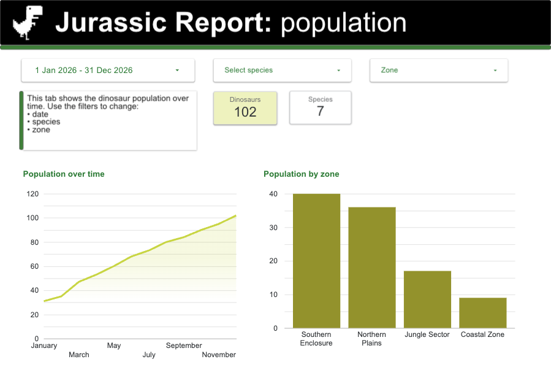
Session 1
In session 1 we start by identifying user needs, choosing data and adding it to your dashboard. We'll create some colour themes and start adding components. This takes about an hour. Go to Session 1.
In session 2 we add new pages to our dashboard and expand how we work with components, adding new filters to components, using calculations to transform our data and adding multiple data to charts and tables. This takes about 30 minutes. Go to Session 2.
In session 3 we continue to include more complex components and fields, and create our own groups to control how we see the data. This takes about 30 minutes. Go to Session 3.
Overview
In this session we will:
- identify user questions
- connect your data
- format and design your interface
- build scorecards, bar charts, line charts
- add interactive filters
- add a time series control
This will open in a new tab, so you can use it for reference if you need to.
Meet the scenario
Scenario: To promote opportunities for colossal growth, the government has decided to build and manage the world's first dinosaur reserve, just outside London.
This will be managed by DSIT, in the Monitoring, Evaluation, Telemetry, and Ecological Operational Reporting (METEOR) directorate.
Task: we need to build a dashboard to answer our stakeholder's questions quickly.
Start with user needs
Before you do any analysis, or display it in a dashboard, ask two questions:
- Who are our users?
- What do they need to know?
We'll design each dashboard on this basis. This tells you:
- their key questions and priorities (what do they want to know and why?)
- the language they use (would they say 'views' or 'popularity'?)
- their context (how long do they have to work with the dashboard, how familiar are they with the interface?)
- their expertise (do they know the metrics we're using?)
How to set up a performance framework is out of scope for this dashboarding training, I will cover this in a separate session.
Prepare your data
Data Studio supports data connections to common sources, such as, APIs, BigQuery - and Excel sheets, as we will use in this training.
It is important to understand the data you're working with. This data includes several columns including:
- Date - when the animal arrived in the park
- Animal_ID - a unique identifier for each dinosaur
- Species - the dinosaur's species
- Zone - which area of the park is currently located in
- Health status - the current health condition of the dinosaur
- Population - the population the dinosaur adds to the park
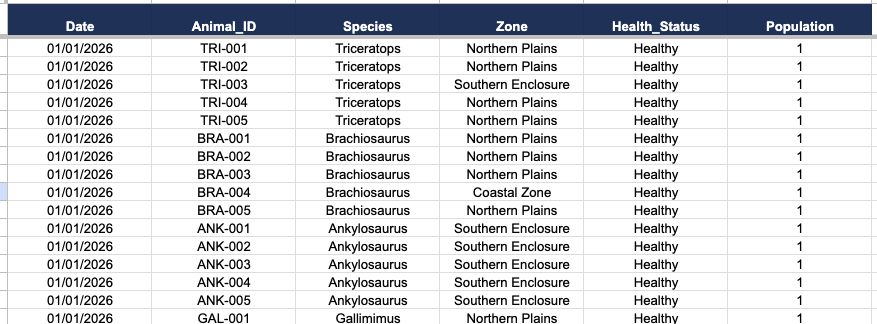
Make sure your data is ready
Before you use add data to dashboarding software you need to make sure it contains as few as possible errors or inconsistencies (known as being 'cleaned'). For example, you should have:
- clear and consistent naming conventions for headers and data — Data Studio is case sensitive
- headers in row 1 — Data Studio reads row 1 as column names
- no blank rows — Data Studio stops reading when it hits one
- no merged cells — these stop Data Studio detecting fields
Do this cleaning work in Sheets or Excel, not in Data Studio. Processing in the dashboard slows loading times for your users — and if you store your data in BigQuery, it also costs money. It is also much easier to do in sheets.
Download the Jurassic Reserve data (.xlsx)
This is the raw data we will connect to Data Studio in this session.
Create your dashboard
Now you have data, we can make a new dashboard and start adding data to it.
To make a new dashboard:
- Log into Data Studio.
- Click 'Create' then select 'Report' (Ignore the window which asks you for data.).
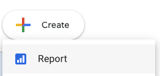
Take a quick tour of Data Studio
Every dashboard has the same layout:
- the top toolbar with editing options, which includes a button on the right to 'View' (preview) the dashboard - this changes to 'Edit' when you click it
- the canvas in the middle where you create what your dashboard looks like
- the properties panel on the right, where you control settings for each component
- the data panel on the far right, where you control the data sources you're using
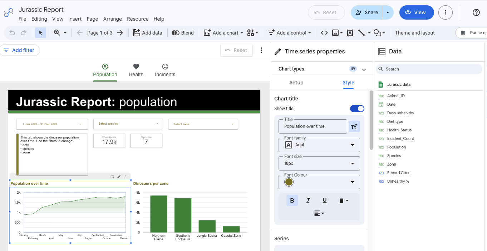
When you select a component, the properties panel splits into a 'Setup' tab (component settings and fields — the columns from your data) and a 'Style' tab (component formatting).
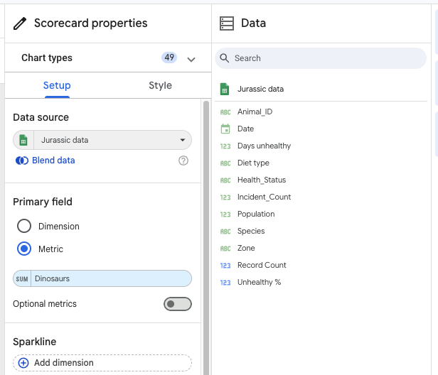
Add data to Data Studio
We will now add data to our dashboard and start working with it. To add a data source:
- Click 'Add data' on the toolbar.
- Click 'Google Sheets'.
- Select your sheet and tab.
- Click 'Add'.
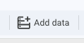
The name of the tab will appear in the data panel. This means it is available for us to use.
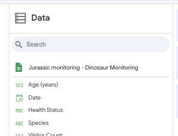
If you have a spreadsheet with several tabs, you will need to add each tab manually
Set up your design style
You need to set up your dashboard design to make sure it's visually consistent. There are 2 ways to control colours and fonts:
- global controls (which apply to everything)
- individual controls (for each component)
It's best practice to make simple dashboards, where each page answers one simple user question. This means you'll have several dashboard pages, so the best style approach is to:
- make global themes (for example, for key colours)
- create a template tab which includes your basic layout and controls
- duplicate this template to make a new page
- adjust components as needed (such as adjusting a graph colour for accessibility)
Choose fonts and colours
To adjust the default colours and styles for your fonts and components:- Click 'Theme and layout'.
- Click 'Customise'.
- Set your colours following your department's brand guidelines, for:
- Primary styles — graph text and titles
- Accent styles — arrows, selectors
- Textbox styles — links and textbox fonts
- Page navigation — links for page selection
- Chart palette — main chart colours
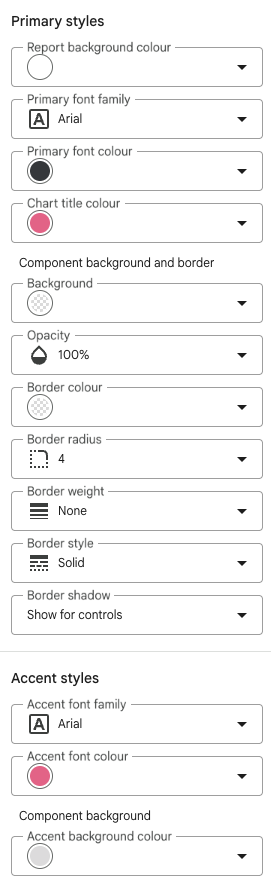
Create your page design
Your dashboard page design is the consistent shape of your dashboard before you add content. This usually includes:
- the page banner and title
- the date range control
- any other consistent elements (such as a text box explaining what the page shows and how to use it)
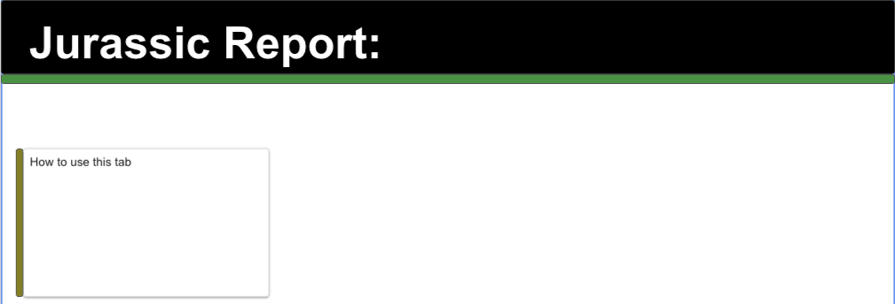
To adjust how your dashboard is laid out:
- On the top toolbar click the drawing components (such as textbox, line or shape).
- Add a rectangular shape for your banner and title background.
- Add a textbox and include text for the title.
- Click the component to edit their properties in the properties panel (such as colour and size).
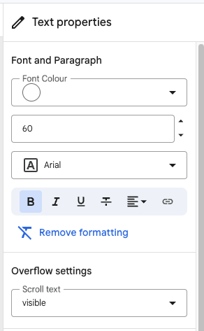
Add a scorecard
Now we add our first component, based on our user needs.
The first user question is how many dinosaurs do we have?
User need
As a Lead, I need to get a simple headline figure quickly, so I can report back to my superiors.
Solution: scorecard
Displays a single summarised number. Can show change (for example, compared to last month).
To add a scorecard to your dashboard:
- Click 'Add chart' then select 'Scorecard'.
- Click the 'Setup' tab.
- Drag 'Animal ID' into the 'Primary dimension' field - this counts the number of rows with an ID in the data.
- Hover over the word 'SUM' and click the pencil icon, to edit the variable.
- Under Aggregation click 'Count Distinct' to count the number of unique identifiers.
- Click 'Display name' and change it to something user friendly (such as, Dinosaurs).
- (Optional) Click 'Display format' to add or remove decimal places.
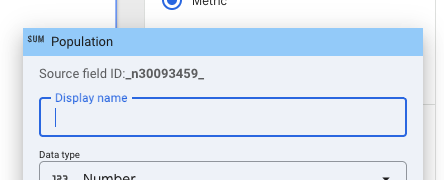
This adds a scorecard, but the number may be hard for people to read easily.
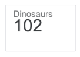
To change how the scorecard looks:
- Click the Style tab.
- Under Labels, change font size to 30 and change field justification so it's centred.
- Under Background and border, change the colour to highlight a specific card.
- Under Background and border, toggle a border shadow for subtle emphasis.
- (Optional) under padding, change Line height to move the text down if you want larger scorecards.
- (Optional) for large numbers, Under Primary metric, toggle compact numbers on (changes 1,213 to 1.2k).
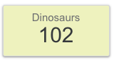
Add a time series chart
The next user question is how has the number of dinosaurs changed over time
User need
As a Team manager, I need to see how the population changes over time, so I can plan and manage resources.
Solution: time series chart
Displays trends over a continuous period. Identifies patterns over time.
Understand dimensions and metrics
Data Studio sorts your data into dimensions (things you group data by) and metrics (things you measure). This controls how they are shown on the dashboard, for example, whether it appears as an axis or as data. You can change these by:
- dragging them into different parts of settings panel
- using them to create calculated fields (always metrics)
You will usually drag your data into the dimension or the metric section manually, to choose how you want them to be shown
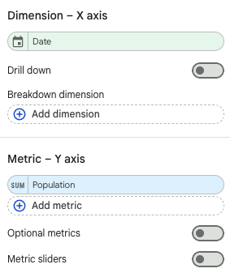
Add a time series chart
- Click 'Add chart'.
- Select 'Time series chart'.
- Drag 'Animal_ID' onto Metric.
- Set Aggregation to 'Count Distinct' (you're measuring unique dinosaurs per zone).
- Click the pencil to edit: Data type, Date and Time, Month.
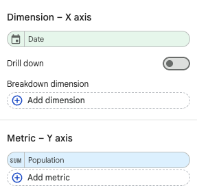
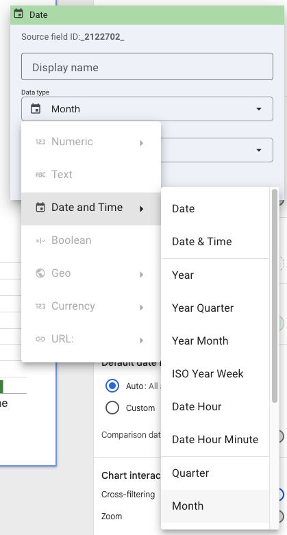
To change how the Time series chart looks:
- Click the Style tab.
- Toggle 'Show title' to on, and change the title.
- Set the left Y-axis font size to 16.
- Set the X-axis font size to 16.
- Toggle 'Legend' off.
The time series chart now displays a title, and the font is large enough for people to read. You can change these numbers but make sure they are consistent for all your graphs.
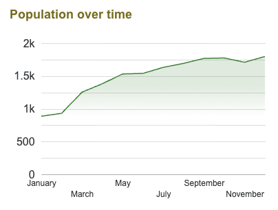
Add a bar chart
The next user question is which zone has the most dinosaurs?
User need
As a Team manager, I need to see how the population changes in each zone, so I can plan and manage dinosaur allocation.
Solution: bar chart
Compares metrics across categories. Shows rankings and distribution.
Add a bar chart
- Click 'Add chart' then select 'Vertical bar chart'.
- Drag 'Zone' onto Dimension (you're grouping by zone).
- Drag 'Animal_ID' onto Metric.
- Set Aggregation to 'Count Distinct' (you're measuring unique dinosaurs per zone).
- Choose how the bars are ordered:
- Sort section: Population
- check the aggregation is Count
- Order: Descending
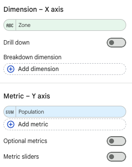
To change how the bar chart looks:
- Click the Style tab.
- Toggle 'Show title' on and change it to 'Dinosaurs per zone'.
- Set the left Y-axis font size to 16.
- Set the X-axis font size to 16.
- Toggle 'Legend' off.
The bar chart now displays a title, and the axis are large enough for people to read.
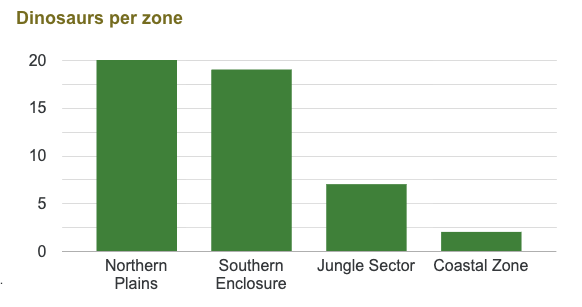
Add a date control
The next user question is how can I see this data over different times scales
User need
As a dashboard user, I need to see metrics over specific time ranges, so I can see how information changes with time.
Solution: date range control
Sets the time frame for a page. Allows comparison (for example, compared to last month).
Add a date range control
Date range controls let you control which time period your dashboard shows information for. This can be set to a default (for example, the year to date) but the controls allow users to change this to suit their needs.
Unless you're giving a summary, each page should have a date range control - so should be added to your page template. To add a date range control:
- Click 'Add a control' then select 'Date range control'.
- Drag this to the top of your dashboard.
- Select the auto date range (for example, click 'Last 7 days' and change to 'Last quarter').
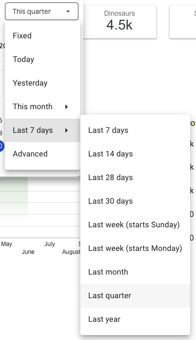
Add filters
The next user question is how are species distributed in the park?
User need
As a Team manager, I need to isolate specific groups, so I can find their information quickly.
Solution: filters
Narrows down the entire report. Simplifies the design for users. Enables interactivity.
Filters let you break down data and get more detail where you need to. The filter categories are automatically chosen from your data - but you can make your own filter groups if you need to.
Add a filter to your dashboard
- Click 'Add a control' then select 'Drop-down list'.
- Drag this to the top of your dashboard.
- Drag the control dimension onto it (for example, Species).
To change how the filter chart looks:
- Click the pen next to the control field and edit it to say 'Select species'.
- Optional: the filter is based on population - toggle 'Show values' off if you don't want to see the numbers next to each dimension when you click the filter.
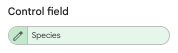
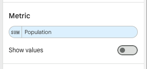
This filter will be applied to the whole dashboard. You should add this to your template, as even if you don't keep the same filter you should keep the same location on the dashboard,so you don't add extra cognitive load for your users.
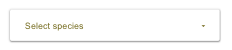
Session 1 summary and homework
Your dashboard should now include:
- a banner and page title, showing what the dashboard is for
- time controls and filters for the data
- a score card showing the number of dinosaurs in the park
- a time series graph showing how dinosaur population has changed over time
- a bar chart showing how the number of dinosaurs spread across each zone
The components you've added to this page will give you a better idea about how your page is laid out, and the colours and styles you've chosen. Before moving onto the next session, take time to adjust how this page is set up so you can use it as the template for future pages. For example, you could:
- change your theme colours
- adjust where the controls are laid out on the screen
You could also choose to add more components, for example:
- adding scorecards for other variables (such as species)
- adding filters for other variables (such as zone)
Overview
In session 1 we:
- identified user questions
- connected our data
- formatted and designed our interface
- added scorecards, bar charts and time series charts
- added time series and filter controls
In this session we will:
- add new pages
- create calculated fields
- format numbers
- add tables with multiple sorts
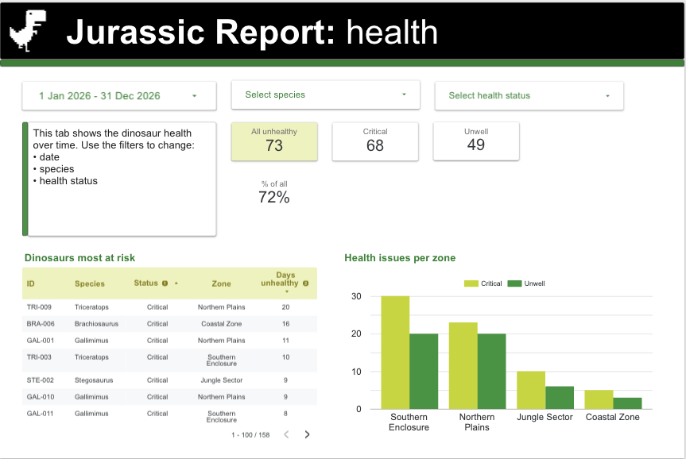
This will open in a new tab, so you can use it for reference if you need to.
Adding or duplicating a page
We will be continuing to explore components in this session, but first we need to talk about pages. It is important to have more than one page if your users have lots of questions. This is because busy pages (with lots of components) are hard to understand, and each component adds load time. Aim for a maximum of 3 to 6 components (such as scorecards, text boxes and graphs) per page.
When designing your dashboard, split up your pages by level of detail or theme, for example: overview, population details, health details.
To add a new 'template' page by duplicating an existing one:
- Click 'Page' then 'Duplicate page' (duplicate your current page to keep your design template).
- You'll see a page selector on the right.
- Click 'Page' then 'Manage pages'.
- Click the three dots to change properties (such as name or icon) — for example, Population and Health.
- Optional: change this in your title bar.
- Optional: click 'Theme and layout', then 'Layout', and change 'Navigation type' to Tab.
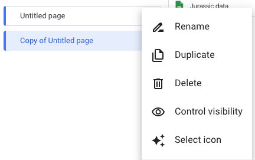
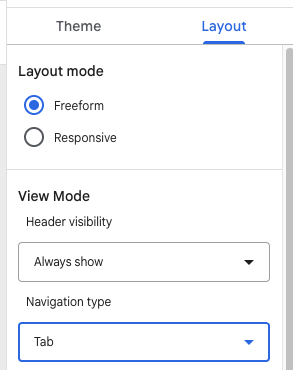
You can now use your duplicated page as a base to keep your design approach consistent. You may find it easier to edit the settings of your existing page components, instead of adding new ones of the same type. Rename the banner to the focus of the new page, in this case, 'health'.
Add a scorecard with a filter
The next user question is how many unhealthy dinosaurs do I have?
User need
As a Team manager, I need to quickly see how many ill dinosaurs there are, so I can focus my resources on helping them.
Solution: scorecard
Displays a single summarised number. Can show change (for example, compared to last month).
The filter controls we have added act on the entire page at once. In this case, we want to add a filter to a specific component (to show the subection of unhealthy dinosaurs instead of all of them).
Your duplicated page already has a hero card which says how many dinosaurs are in the park. We can add a filter to this to show how many unhealthy dinosaurs are in the park. To do this:
- Click the population score card (the component you want to add a filter to).
- In the Setup tab, scroll to 'Add filter'.
- Click 'Add filter'.
- Set the rule for which part of the data to include (show) or exclude (hide).
- Change name to what the filter does: Hide health dinos
- Change the action to 'Exclude'
- Select the 'Health_status' variable
- Select the match condition (when the health status is 'Equal to (=)')
- Select the variable entry 'Healthy'
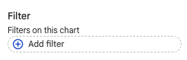
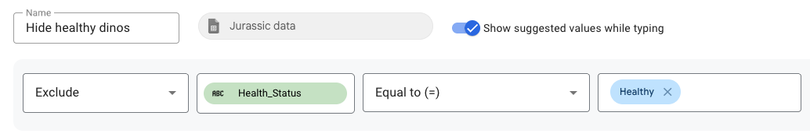
The new filter looks at the data and excludes any dinosaur with a status of 'healthy'. You can see it's been applied in the Settings panel
Any component-level filter you make will be available for all components using the same data (you won't need to remake it each time).
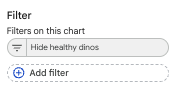
You should also now change the text for the scorecard (click the pen icon next to the word 'Dinosaurs' Metric and rename it 'All unhealthy').
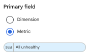
Calculate and display a percentage
Numbers can be hard to picture, so many people prefer to see percentages. We need to:
- use a calculated field to get the percentage metric
- change how the information is displayed
A calculated field is like adding a new column to the dataset, but Data Studio runs these calculations for you and it does not affect your original data. If there are lots of calculated fields this can affect loading time.
Calculate a proportion
Our dataset did not include percentages so we need to add a calculated field to do this manually. To do this:
- Click 'Add a field' in the Data panel.
- Name it 'Unhealthy proportion'.
-
Enter this formula, then click Save:
Unhealthy % formulaCOUNT_DISTINCT(CASE WHEN Health_Status = 'Critical' OR Health_Status = 'Unwell' THEN Animal_ID END) / COUNT_DISTINCT(CASE WHEN Health_Status IN ('Critical', 'Unwell', 'Healthy') THEN Animal_ID END)
This calculation gives a proportion for how many dinosaurs were unhealthy in the time period:
- Looks at every row in the data
- Marks a row as "1" if the status is Critical or Unwell
- Counts how many different dinosaurs had that mark
- Divides that by how many different dinosaurs appear as Critical, Unwell, or Healthy in total
Display the proportion as a percentage
When you add this data to a scorecard you will see this as a proportion. We can control how the data is formatted to make it appear as a percentage.
To add the proportion as a scorecard:
- Click the 'All unhealthy' number scorecard, right-click and copy it.
- Right-click and paste to add a copy into your dashboard.
- Scroll down and hover over your 'Hide Healthy dino' filter and click the 'X' to remove it.
- Click your 'Unhealthy proportion' calculated field in the data panel and drag it over the 'All unhealthy metric' to replace it.
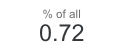
To change how the scorecard is formatted:
- Click the pen icon to edit.
- Change the name to 'Unhealthy %'.
- Change the data type to Numeric --> Percent.
- Change the Display format to 'Percent (0)'.
- (Optional) Change how the scorecard is formatted using the style tab.
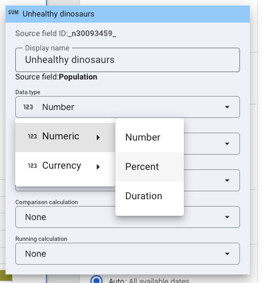
You can now help your users by giving them context for the numbers using a dynamic percentage.
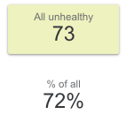
Add a multi series chart
The next user question is what's the health of my dinosaurs in each zone?
User need
As a Team manager, I need to see which zone has the worst medical issues, so I can focus my resources on helping them.
Solution: multi series chart
Compares multiple groups side by side. Reveals relationships and correlations.
You can make a multi series chart by adding several metrics at once to break down the data in a visual way. To add a multi-series chart:
- Click 'Add chart' then select 'Bar chart'.
- Drag 'Zone' onto Dimension (you're grouping by zone).
- Drag 'Health_status' onto Breakdown dimension (you're then grouping by health).
- Drag 'Animal_ID' onto Metric.
- Set Aggregation to 'Count Distinct' (you're measuring unique dinosaurs per zone).
- Choose how the bars are ordered:
- Sort section: Population
- Order: Descending
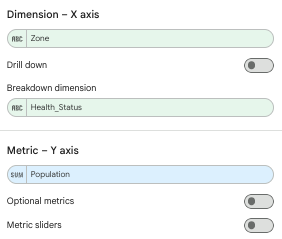
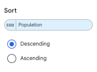
To change how the multi-series chart is formatted:
- Click the Style tab.
- Under 'Chart title', toggle 'Show title' on and change it to 'Health issues per zone'.
- Under Axes, set the left Y-axis font size to 16.
- Under Axes, set the X-axis font size to 16.
- Under Bar chart, change 'Group bar width' to 85%.
- Optional: change other formatting settings
- change bar width (under Bar Chart settings in the Style tab)
- change legend position (under Legend settings in the Style tab)
- change bar colours (in the Colour by settings in the Style tab, or by global theme colours
Your chart will now show bar charts of health statuses for each zone.
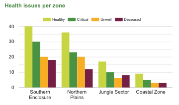
Filter out unwanted information
If we add a bar chart, it shows all dinosaurs. We don't want to see healthy dinosaurs — they're too large a proportion, and they make the others hard to see. We want to filter out data where the status is 'Healthy'. This is similar to how you added a filter before:
- Click the bar chart to select it.
- In the Setup tab, scroll to 'Add filter'.
- Click 'Add filter' and select 'Hide healthy dinos'.
- (Optional) Make a filter to hide deceased dinosaurs too.
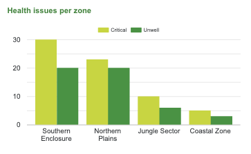
Add a table
The next user question is which animals need attention?
User need
As a Team manager, I need to see which animals have the worst medical issues, so I can focus my resources on helping them.
Solution: table
Displays granular details. Allows sorting. Allows monthly comparisons.
Create a "days unhealthy" field
We want a field that tracks how many days an animal has been ill. We'll tell Data Studio: if the animal is 'Not healthy', add 1 to a column for that day. We can then sum that number to calculate how many days the animal has been unwell.
- Click 'Add a field' in the Data panel.
- Name it 'Days unhealthy'.
-
Enter this formula, then click Save:
Days unhealthy formulaCASE WHEN Health_Status = 'Critical' OR Health_Status = 'Unwell' THEN 1 ELSE 0 END
Set up the table
Now we have our data we need to use it to highlight unwell animals for our users. To add and sort a table:
- Click 'Add chart' then select 'Table'.
- Drag 'Animal ID', 'Species', 'Health Status' and 'Zone' onto Dimension.
- Drag the pills to reorder the columns in the table.
- Click the pen to edit their Display Name.
- Drag 'Days unhealthy' over the 'Animal_ID' pill on Metric to replace it.
- Set a filter to 'Hide healthy dinos' so you only see the ill ones.
- Click the pill on Sort and select Health status (Ascending).
- Click 'Add sort' then 'Days unhealthy' (Descending).
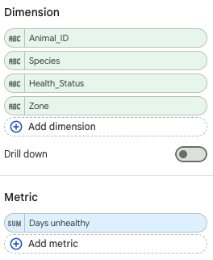
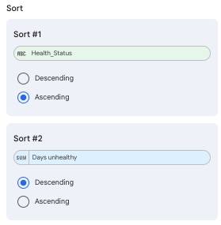
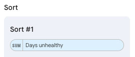
To change how the table is formatted:
- Click the Style tab.
- Toggle 'Show title' on and change it to 'Dinosaurs most at risk'.
- Under 'Show header', toggle on 'Wrap text'.
- Under table body, toggle off 'Row numbers'.
- Under table body, toggle on 'Wrap text'.
- Change justification for Dimensions and Metrics.
- Drag the column bars to resize columns manually.
Your table will now show a list of dinosaurs, where they are and sort them by worst status and number of days they've been unhealthy so they can be prioritised for care.
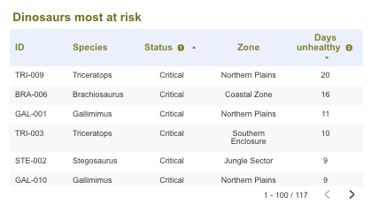
Session 2 summary and homework
Your dashboard should now include:
- a new page for health components
- time controls and filters for the data
- a score card showing the number of unhealthy dinosaurs in the park
- a score card showing unhealthy dinosaurs as a percentage of all dinosaurs
- a multi series bar chart showing unheathy status in each zone
- a sorted table highlighting the most ill dinosaurs
You may want to:
- add more scorecards for the number of unwell or critical dinosaurs (hint: you'll need to add filters to the scorecards)
- hide the 'deceased' dinosaurs from the health issues per zone tab (hint: update or add conditions to your existing chart filters)
- replace the zone filter with one that filters by health status
- update the total count and charts on the Population tab to hide deceased dinos
- add another sort to the table so it sorts by health, then by days
Overview
In session 2 we:
- added a new page
- added a filter to a scorecard
- used calculated fields to calculate proportion
- change formatting options for percentages
- added a multi-series chart with a filter
- added a table with multiple sort features
In this session we will:
- add new data and fields
- add multiple series in graphs
- more calculated fields
- compare data (and time series)
- share and schedule report delivery
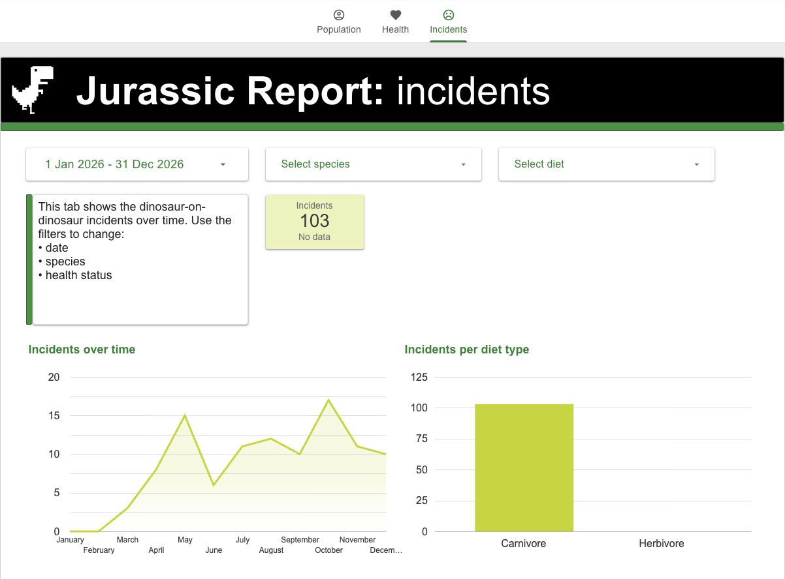
This will open in a new tab, so you can use it for reference if you need to.
The new arrivals
Scenario: In March, public demand meant we needed to add some predators to our park (they were given goats to eat).
We're also now seeing incidents of dinosaurs attacking each other.
Task: we need to update our dashboards and track this behaviour.
Update your data
You will often need to add new data to your dashboard, which may even include new columns or tabs. If you update data in your original spreadsheet but don't change any columns it will update in your dashboard automatically. However, you will need to add changes to columns manually.
I have updated your original dataset to include an additional column called 'Incident_count', a count of attacks started by that particular dinosaur. To add this to your dataset:
- Open the file.
- Select all the data and copy it.
- Select all the data in your original data file and paste over it
- Save
You could add the new dataset separately, the same way you added your file in the beginning. However, this would create a new data source for your dashboard and you'd have to switch your data sources over manually.
Update your data
If you're just adding new rows of data (for example, extra dates) you don't need to do anything. This happens automatically, but you can force an immediate refresh if you need to:
- Click the three dots next to 'View' (or 'Edit').
- Click 'Refresh data'.
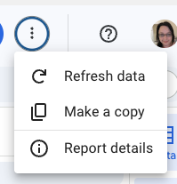
We are adding new columns (fields) to the dataset. We need to tell Data Studio to check the original dataset and find these new columns. To do this:
- Click Edit.
- Click 'Resource' then 'Manage added data sources'.
- Click 'Edit' next to your data source.
- Click 'Refresh fields' in the bottom left.
- Click 'Finished' then 'Close' in the top right.
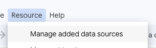
Add a scorecard for incidents
The first user question is how many incidents do we have?
User need
As a Lead, I need to get a simple headline figure quickly, so I can report back to my superiors.
Solution: scorecard
Displays a single summarised number. Can show change (for example, compared to last month).
The first thing you need to do is add a new page so we have a new place to display our incident data.
To add our incident scorecard, you can edit the settings of the existing scorecard, or add a new one. To do this:
- Click 'Add chart' then select 'Scorecard'.
- Click the 'Setup' tab.
- Drag 'Incident count' into the 'Primary dimension' field.
- Hover over the word 'SUM' and click the pencil icon.
- Click 'Display name' and change it to something user friendly (such as, Incidents).
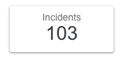
The user wants to be able to understand how incidents are changing over time. One way to do this is to add a time comparison to the scorecard. This automatically calculates a comparison to the previous time period, so if the dashboard is set up to see a month, the comparison will be for the previous month.
To add a time comparison to your scorecard:
- Click you scorecard to select it.
- In the 'Setup' panel, scroll to 'Default date range filter'.
- Toggle 'Comparison date range' on.
- Click 'None' and select 'Previous period'.
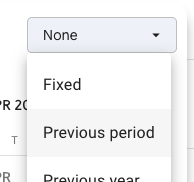
The scorecard will now display a simple visual check which shows how incidents have changed. If there's no data for the previous period, it says 'No data'. You can change if and how this appears in the Style tab, in the 'Missing data' section.
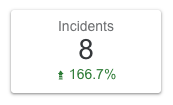
Add a time series chart for incidents
The next user question is how have incident numbers changed over time?
User need
As a Team lead, I need to see how incidents change over time, so I can find the source of the issue.
Solution: time series chart
Displays trends over a continuous period. Identifies patterns over time.
We can show this using a time-series chart:
- Click 'Add chart'.
- Select 'Time series chart'.
- Drag 'Incident_count' onto Metric.
- Click the pencil to edit: Data type, Date and Time, Month.


Understand time series controls
Time series controls can apply:
- to the whole board (a global control)
- to each page
- to individual components
In this case, we may want the line charts to show all data — even if the comparisons are for the month we're in.
To show you this working, you need to temporarily change the auto control for the time series on the tab to 'Last month'. This will make it obvious when we change the graph's controls to be for 'all time'.
To add a control to a specific component:
- Click the component to select it.
- Scroll to 'Default date range filter' and click 'Custom'.
- Select 'This month' then 'This year'.
- Choose how the bars are ordered: Sort section: Date (Ascending).
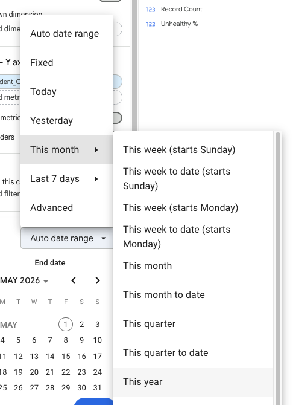
The graph now always displays data for 'this year', even if the page date control changes.

Add a bar chart for species
The next user question is what dinosaurs are responsible?
User need
As a Team manager, I need to know what dinosaurs are causing the incidents, so I can deal with them.
Solution: bar chart
Compares metrics across categories. Shows rankings and distribution.
We can use a bar chart to see which dinosaurs are responsible for these incidents. To do this:
- Click 'Add chart' then select 'Vertical bar chart'.
- Drag 'Species' onto Dimension (you're grouping by species).
- Drag 'Incident_count' onto Metric (you're measuring incidents per species).
- Choose how the bars are ordered: Sort section: Incident_count, Order: Descending.
- In the Style tab, change the title to 'Incidents per dinosaur'.
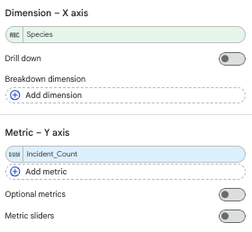
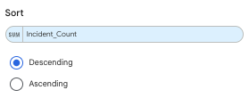
Add a calculated field for groups
Sometimes we need to make our own dimensions. We clearly have two groups in the park (carnivores and herbivores) which we need to distinguish so we can use this for filters and charts. We can do this with a calculated field.
To define groups using a calculated field:
- Click 'Add a field' in the Data panel.
- Name it 'Diet type'.
-
Enter this formula, then click Save:
Diet type formulaCASE WHEN Species = "T-Rex" OR Species = "Velociraptor" THEN "Carnivore" ELSE "Herbivore" END
Now we can explore the data using these groups by editing our 'Incidents per dinosaur' bar chart. To do this
- Click the 'Incidents per dinosaur' bar chart
- Click the 'Diet type' dimension in the Data panel and drag it over the 'Dinosaur' dimension
This updates the bar chart so it's now grouping incidents using our new groups.
The updated graph shows us that the carnivores are responsible for the incidents we've been seeing.
Session 3 summary and homework
Your dashboard should now include:
- updated data showing new dinosaurs and incidents
- time controls and filters for the data
- a score card showing the number of incidents
- a time series for incidents
- a bar chart exploring the cause of the incidents
You may want to:
- add filters to the other tabs for carnivore and herbivore
- change the date granularity on your line chart to see how it affects the data
- make the population graphs show a full year no matter what date is selected
- add a graph to show which dinosaurs attack the most
- add an overview page for the park
- add a second metric line to your time chart (Visitor Count) alongside Incident Count. Does footfall correlate with incidents?
Next steps
Keep playing! Please email jenny.bradley@dsit.gov.uk if you have any questions.
The principles behind these skills transfer directly to Power BI for those who use Microsoft, but Data Studio is more accessible while you're learning.
Power BI training is coming.